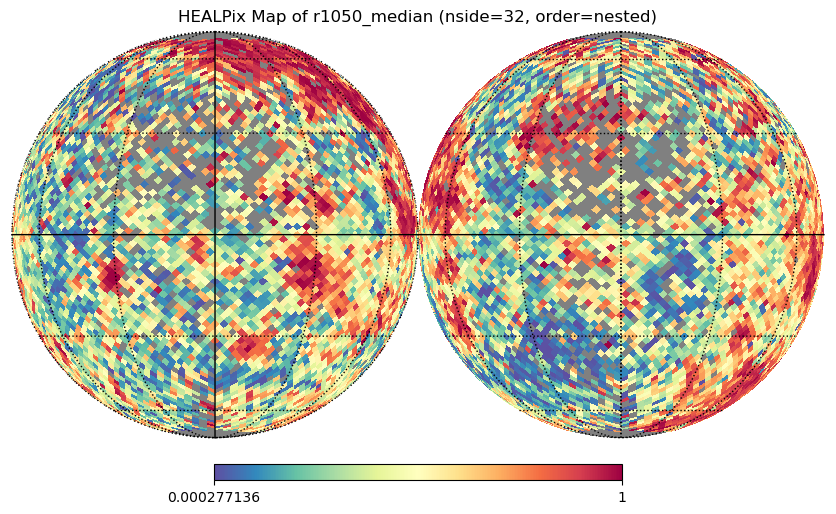
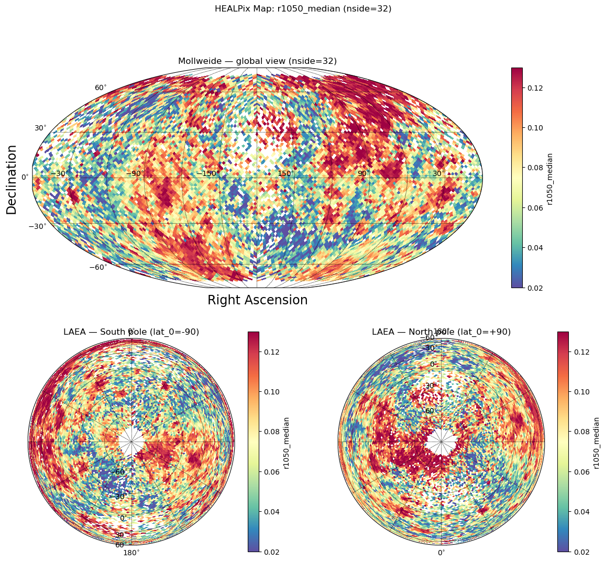

This function prepares a HEALPix map array for visualization by:
Extracting data column as a numpy array
Optionally applying histogram equalization to enhance contrast
Optionally clipping extreme values using percentiles
Creating a matplotlib ScalarMappable for proper colorbars
The function returns both the processed map array (for plotting) and the ScalarMappable (for colorbars), allowing you to use the original data range in the colorbar even after histogram equalization.
*Prepare a HEALPix map array and ScalarMappable for plotting.
This function processes aggregated HEALPix data for visualization by: - Extracting the specified column as a numpy array - Optionally applying histogram equalization (enhances contrast) - Optionally clipping extreme values using percentiles - Creating a ScalarMappable with original data range for colorbars*
The following examples demonstrate how to use the visualization utilities. These require additional dependencies (healpy, skyproj) that are not part of the core package.
Setup Test Data
First, let’s create some sample aggregated data to visualize:
# Create sample aggregated data for examplesfrom pathlib import Path# Check for test datatest_data_dir = Path('../test_data')if test_data_dir.exists():# Load sample data and create sidecarfrom shapely import wkbimport geopandas as gpdfrom healpyxel.sidecar import process_partitionfrom healpyxel.aggregate import aggregate_by_sidecar, densify_healpix_aggregates sample_file = test_data_dir /'samples'/'sample_50k.parquet'if sample_file.exists():# Load and prepare data df = pd.read_parquet(sample_file) df['geometry'] = df['geometry'].apply(lambda x: wkb.loads(bytes(x)) if x isnotNoneelseNone) gdf = gpd.GeoDataFrame(df, geometry='geometry', crs='EPSG:4326')# Create sidecar nside =32 mode ='fuzzy' sidecar_df = process_partition( gdf=gdf, nside=nside, mode=mode, base_index=0, lon_convention='0_360', )# Aggregate df_for_agg = pd.DataFrame(gdf.drop(columns='geometry')) aggregated = aggregate_by_sidecar( original=df_for_agg, sidecar=sidecar_df, value_columns=['r1050'], aggs=['mean', 'median', 'std'], source_id_col='source_id', healpix_col='healpix_id', min_count=1, )# Densify aggregated_dense = densify_healpix_aggregates( agg_sparse_df=aggregated, nside=nside, index_name='healpix_id' )print(f"✓ Prepared test data: {len(aggregated_dense)} HEALPix cells (nside={nside})")print(f" Data cells: {aggregated_dense['r1050_median'].notna().sum()}")print(f" Empty cells: {aggregated_dense['r1050_median'].isna().sum()}")else:print("Test data not found. Examples will be skipped.")print("Run: cd .. && bash create_test_data.sh")
2025-12-12 12:59:39,257 INFO Partition (lon_convention=0_360): processed 50000 geometries, dropped 17 (0.0%) total [pre-filter: 17, post-processing: 0]
2025-12-12 12:59:39,337 INFO Starting aggregation for 1 column(s): ['r1050']
2025-12-12 12:59:39,338 INFO Aggregation functions: ['mean', 'median', 'std']
2025-12-12 12:59:39,347 INFO Creating source_id column from DataFrame index
2025-12-12 12:59:39,399 INFO Sidecar source_id overlap: 49983/49983 (100.0%)
2025-12-12 12:59:39,400 INFO Merging sidecar with original data
2025-12-12 12:59:39,405 INFO Grouping by healpix_id and computing aggregations
2025-12-12 12:59:39,473 INFO Processing 10825 HEALPix cells
2025-12-12 12:59:41,874 INFO Creating output DataFrame with 10825 cells
2025-12-12 12:59:41,897 INFO Aggregation complete. Output shape: (10825, 4)
2025-12-12 12:59:41,906 INFO Densified to 12288 cells (added 1463 empty cells)
✓ Prepared test data: 12288 HEALPix cells (nside=32)
Data cells: 10825
Empty cells: 1463
Example 1: Basic Usage with Healpy
Simple orthographic projection using healpy:
if HEALPY_AVAILABLE and'aggregated_dense'inlocals():# Prepare the map output_column ='r1050_median' healpix_map, valid_pixels, invalid_pixels, mappable = prepare_healpix_map( aggregated_dense, output_column=output_column, equalize=True, cmap='Spectral_r' )# Plot with healpy order ='nested'# healpyxel default nest_flag = (order =='nested') ax = healpy.visufunc.orthview( healpix_map, nest=nest_flag, title=f'HEALPix Map of {output_column} (nside={nside}, order={order})', cmap='Spectral_r', flip='geo', norm='None', xsize=2500 ) healpy.visufunc.graticule()else:print("Skipping: healpy not available or no test data")
2025-12-12 12:59:42,910 INFO 0.0 180.0 -180.0 180.0
2025-12-12 12:59:42,911 INFO The interval between parallels is 30 deg -0.00'.
2025-12-12 12:59:42,911 INFO The interval between meridians is 30 deg -0.00'.

Example 2: Multi-Panel Plot with Skyproj
Advanced visualization with multiple projections (Mollweide + polar views):
if SKYPROJ_AVAILABLE and HEALPY_AVAILABLE and'aggregated_dense'inlocals():from matplotlib import pyplot as plt# Prepare the map output_column ='r1050_median' healpix_map, valid_pixels, invalid_pixels, mappable = prepare_healpix_map( aggregated_dense, output_column=output_column, equalize=True, cmap='Spectral_r' )# Mark invalid pixels for healpy healpix_map[invalid_pixels] = healpy.UNSEEN# Create figure with 3 panels fig = plt.figure(figsize=(14, 12)) gs = fig.add_gridspec(2, 2, height_ratios=[1, 1]) order ='nested' nest_flag = (order =='nested')# Top row: full-width Mollweide projection ax_top = fig.add_subplot(gs[0, :]) sp_moll = skyproj.MollweideSkyproj(ax=ax_top, lon_0=-180, longitude_ticks='symmetric') _ = sp_moll.draw_hpxmap( healpix_map, nest=nest_flag, cmap='Spectral_r', zoom=True, ) fig.colorbar(mappable, ax=sp_moll.ax, orientation='vertical', label=output_column) sp_moll.ax.set_title(f'Mollweide — global view (nside={nside})')# Bottom-left: LAEA centered on South pole ax_bl = fig.add_subplot(gs[1, 0]) sp_south = skyproj.LaeaSkyproj(ax=ax_bl, lat_0=-90.0) _ = sp_south.draw_hpxmap( healpix_map, nest=nest_flag, cmap='Spectral_r', zoom=True, ) fig.colorbar(mappable, ax=sp_south.ax, orientation='vertical', label=output_column) sp_south.ax.set_title('LAEA — South pole (lat_0=-90)')# Bottom-right: LAEA centered on North pole ax_br = fig.add_subplot(gs[1, 1]) sp_north = skyproj.LaeaSkyproj(ax=ax_br, lat_0=90.0) _ = sp_north.draw_hpxmap( healpix_map, nest=nest_flag, cmap='Spectral_r', zoom=True, ) fig.colorbar(mappable, ax=sp_north.ax, orientation='vertical', label=output_column) sp_north.ax.set_title('LAEA — North pole (lat_0=+90)') plt.suptitle(f'HEALPix Map: {output_column} (nside={nside})');else:print("Skipping: skyproj/healpy not available or no test data")

Example 3: Percentile Clipping
Remove extreme outliers before visualization:
if'aggregated_dense'inlocals():# Clip at 5% and 95% percentiles healpix_map, valid, invalid, mappable = prepare_healpix_map( aggregated_dense, output_column='r1050_median', equalize=True, percentile_cutoff=5# Symmetric: [5%, 95%] )# Or asymmetric clipping healpix_map, valid, invalid, mappable = prepare_healpix_map( aggregated_dense, output_column='r1050_median', equalize=True, percentile_cutoff=(2, 98) # Asymmetric: [2%, 98%] )print(f"✓ Prepared map with percentile clipping")print(f" Valid pixels: {valid.sum()}")print(f" Invalid pixels: {invalid.sum()}")else:print("Skipping: no test data available")